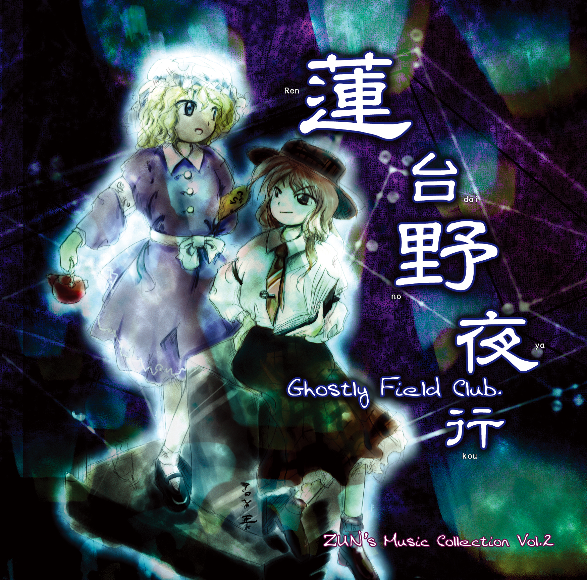

东方Project（日文：東方Project（とうほうプロジェクト），英文：Touhou Project，简称：东方） 是日本同人游戏社团上海爱丽丝幻乐团（即下文所称的「官方」）所制作的一系列同人游戏、相关作品，以及基于前者由爱好者所创作的二次创作所共同构成的覆盖游戏，动漫，音乐，文学等诸多方面的领域。 在部分代理发行商将东方Project相关内容引进到中国市场时1，会使用「东方计划」作为中文名称。
蓬莱传说
(以下为作者评论)
（『蓬莱人形』收录曲）
说到蓬莱，我觉得恐怕也算得上是东方作品里的一个关键词了吧，从最开始出音乐CD的时候就考虑过要给哪首曲子取这个标题了。是的，先决定了曲名，再以此为印象来写曲子的情况也是有的呢。
这首曲子让人感觉安静和舒适得可怕。最近没怎么写过这种感觉的曲子呢……。已经完全变成射击脑的感觉了。这样的话视野会变狭窄的，偶尔还是要取回一下东方脑。
给这种音乐CD原曲做评论，在这里是第一次，所以是很值得珍惜的。写下曲子的评论就会回想起各种各样的事情，如果这也能带来一些成长真是不胜感激。
走在夜晚的莲台野
(以下为作者评论)
（『莲台野夜行』收录曲）
从阴森森的曲风逐渐转变为活泼而生气勃勃的风格，这首曲子给人这么一种印象。也像是在黑夜中墓场举行试胆大会时的感觉一般呢。只不过，这不仅仅只是单纯的试胆大会。是那些真心想和冥界取得交流的一群人之间的试胆大会。真要说的话就如潮来一般……
在聆听这首曲子的时候，你会觉得高潮部分比起活泼的感觉说是可爱更适合用来形容，而且这段给人的印象，就如同出现了在没有墓碑的墓地独自起舞的不可思议的少女的幻觉。这么一想的话，序奏部分的幽灵音（擅自命名的）听起来也变得可爱了呢。
「咻——咚咚」虽然是一种有名的幽灵音，但在我的印象里却是这么一种感觉，幽灵的声音直接在脑海中回响的这种感觉。
终审眷恋的幻想乡
(以下为作者评论)
《东方风神录》第三面的主题曲。
作为潜入妖怪之山的曲目，浓厚的幻想乡风的曲调轰然展开。
为栖居着妖怪的美丽溪谷准备了这至上的旋律。
与令人心生压抑感的第二面相比，那骤然解放了的感觉实在是
令人心情愉悦。